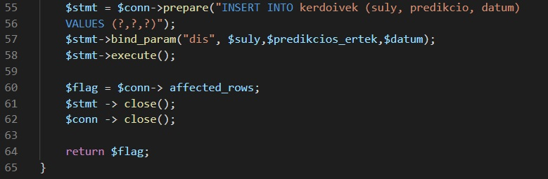
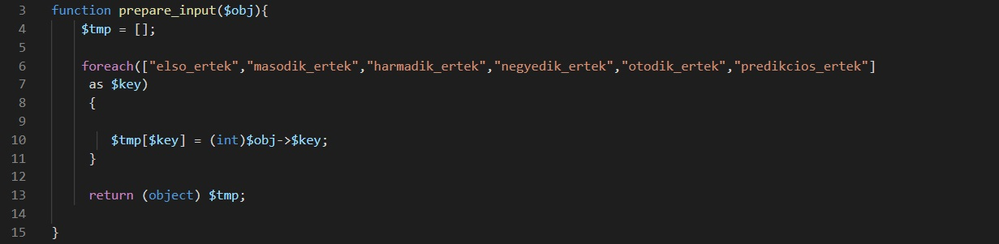

Az alkalmazás potenciális sérülékenységei közé tartoznak azon elemek amelyek esedékesen sérülékenyek lehetnek, ide tartoznak a technológiák amivel az alkalmazás meg lett valósítva. Az alkalmazás használ adatbázist amely implementálásfüggően SQL Injection-t tartalmazhat. A kérdőív adatai JSON objektumként vannak továbbítva. Itt történhet JSON Deserilization sérülékenység illetve valamilyen XSS vektor továbbítása a backendre. Tehát a megvizsgálandó sérülékenységek:
Mivel a webalkalmazás forráskódját ismerjük ezért az SQL Injection részét tesztelés nélkül is alátámasztani lehet, hogy biztonságos. A következő képen látható, hogy a tesztelés hatására nem fog történni semmilyen adatbázist sértő művelet, mivel a backend a prepared statement használatával előkészíti és biztonságos módon adja át a lekérdezésnek az adatokat: 
A tesztelés eredményeképpen alátámasztva bebizonyosodott, hogy az alkalmazás felkészült az SQL Injection támadás ellen.
Az alkalmazás XSS ellen olyan szinten véd, hogy a lehetséges input mezők mindenképp castolva vannak integer formátummá így nem tud semmilyen XSS alapú vektor a szerverhez jutni. A megvalósítás a következő: 
A tesztelés folyamán az alkalmazásba nem jutott be semmilyen XSS alapú vekter.
A JSON bemenet parseolása kulcsok alapján történik, ez azt jelenti, hogy csak a megfelelő kulcsú JSON fájlok kerülnek beolvasásra. Ezek kívül az értékek szintén integerre castolása miatt az alkalmazás nem sérülékeny a JSON alapú támadási vektorok ellen sem.
A tesztelés folyamán az említett állítások valóban bebizonyosodtak, így az alkalmazás védelme megfelelőnek bizonyosult.
PASSED